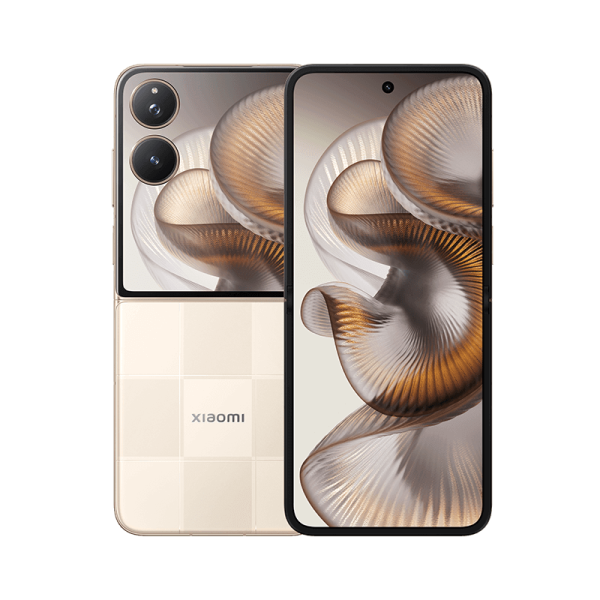

اسم الجهاز: Xiaomi Redmi K80 Ultra
الشاشة: 6.83 بوصة OLED، دقة +1.5K، معدل تحديث 144Hz، سطوع حتى 3200 شمعة
المعالج: MediaTek Dimensity 9400 Plus، بتقنية 3 نانومتر
الرام: 12 / 16 جيجابايت، نوع LPDDR5x
التخزين: 256 / 512 جيجابايت / 1 تيرابايت، نوع UFS 4.1، لا يدعم microSD
الكاميرا الخلفية: مزدوجة (50MP رئيسية + 8MP واسعة)
الكاميرا الأمامية: 20MP
البطارية: 7410mAh، شحن سريع 100W
النظام: Android 15 (واجهة HyperOS 2)
مميزات إضافية: مقاوم للماء والغبار IP68، بصمة بالشاشة، ستيريو Hi-Res، شريحتين، بدون منفذ سماعة
اسم الجهاز: Xiaomi Poco X6 Pro
الشاشة: AMOLED بحجم 6.67 بوصة، دقة 2712×1220، معدل تحديث 120Hz، دعم HDR10+ وDolby Vision
المعالج: MediaTek Dimensity 8300 Ultra، بتقنية تصنيع 4 نانومتر
الرام: 8 أو 12 جيجابايت، نوع LPDDR5
التخزين: 256 أو 512 جيجابايت، نوع UFS 4.0، لا يدعم microSD
الكاميرا الخلفية: ثلاثية (64MP رئيسية + 8MP واسعة + 2MP ماكرو)
الكاميرا الأمامية: 16MP
البطارية: 5000mAh، شحن سريع 67W
النظام: Android 14 مع واجهة HyperOS
مميزات إضافية: بصمة بالشاشة، سماعات ستيريو Dolby Atmos، مقاومة لرذاذ الماء IP54، دعم NFC وIR Blaster
اسم الجهاز: Xiaomi 15 Ultra
الشاشة: 6.73 بوصة LTPO AMOLED، دقة +2K، معدل تحديث 120Hz، سطوع حتى 3200 شمعة
المعالج: Snapdragon 8 Elite، بتقنية تصنيع 3 نانومتر
الرام: 12 أو 16 جيجابايت، نوع LPDDR5X
التخزين: 256 / 512 جيجابايت / 1 تيرابايت، نوع UFS 4.1، لا يدعم microSD
الكاميرا الخلفية: رباعية (50MP رئيسية + 50MP تليفوتو + 200MP بريسكوب + 50MP واسعة)، عدسات Leica
الكاميرا الأمامية: 32MP
البطارية: 5410mAh، شحن سريع 90W، شحن لاسلكي 80W
النظام: Android 15 مع واجهة HyperOS 2
مميزات إضافية: مقاومة الماء والغبار IP68، بصمة بالشاشة، تصوير فيديو حتى 8K، سماعات ستيريو Dolby، دعم eSIM

اسم الجهاز: Xiaomi Mix Flip
نوع الجهاز: هاتف قابل للطي (Flip)
الشاشة الرئيسية: 6.86 بوصة LTPO AMOLED، دقة 1224 × 2912، معدل تحديث 120Hz، سطوع حتى 3000 شمعة
الشاشة الخارجية: 4 بوصة AMOLED، دقة 1392 × 1208، دعم HDR10+
المعالج: Snapdragon 8 Gen 3 (Elite)، بتقنية تصنيع 3 نانومتر
الرام: 12 أو 16 جيجابايت، نوع LPDDR5X
التخزين: 256 / 512 جيجابايت / 1 تيرابايت، نوع UFS 4.1
الكاميرا الخلفية: مزدوجة (50MP رئيسية بعدسات Leica + 50MP واسعة الزاوية)
الكاميرا الأمامية: 32MP، تصوير فيديو بدقة 4K
البطارية: 5165mAh، شحن سريع 67W، شحن لاسلكي 50W
الصوت: سماعات ستيريو، دعم Dolby Atmos و Hi-Res Audio
الاتصال: Wi-Fi 7، Bluetooth 5.4، NFC، Infrared، USB-C
نظام التشغيل: Android 15 مع واجهة HyperOS 2
مميزات إضافية: مستشعر بصمة جانبي، دعم Always-On Display، تصميم نحيف وأنيق
العيوب: لا يدعم eSIM، لا يحتوي على كاميرا Telephoto، لا يوجد معيار مقاومة الماء رسمي
اسم الجهاز: Xiaomi Poco M7 Plus
الشاشة: 6.9 بوصة IPS LCD، دقة +FHD، معدل تحديث 144Hz، سطوع حتى 850 شمعة
المعالج: Snapdragon 6s Gen 3، بتقنية تصنيع 6 نانومتر
الرام: 6 أو 8 جيجابايت
التخزين: 128 جيجابايت، يدعم microSD عبر فتحة SIM مشتركة
الكاميرا الخلفية: مزدوجة (50MP رئيسية + عدسة مساعدة)
الكاميرا الأمامية: 8MP
البطارية: 7000mAh، شحن سريع 33W، شحن عكسي 18W
النظام: Android 15 مع واجهة HyperOS 2
مميزات إضافية: بصمة جانبية، دعم 5G، NFC، IR Blaster، مقاومة الغبار ورذاذ الماء IP64